Nuestros Servicios
Fabricación, mantenimiento, calibración y desarrollo de sistemas de pesaje con equipos de alta calidad y tecnología moderna.
Fabricación de balanzas de camiones
Fabricamos balanzas para camiones de alta resistencia, diseñadas para brindar un pesaje preciso, seguro y confiable en sectores como minería, construcción, industria y logística.
Se fabrican con materiales de primera calidad, garantizando máxima durabilidad, precisión y un óptimo desempeño en condiciones de trabajo exigentes. También fabricamos balanzas en medidas especiales de acuerdo a requerimientos específicos.
Soluciones inteligentes para un pesaje confiable.
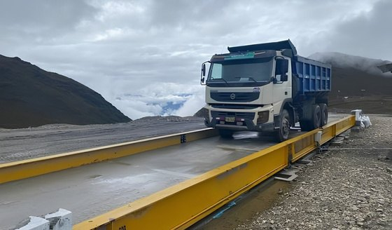
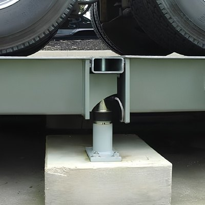
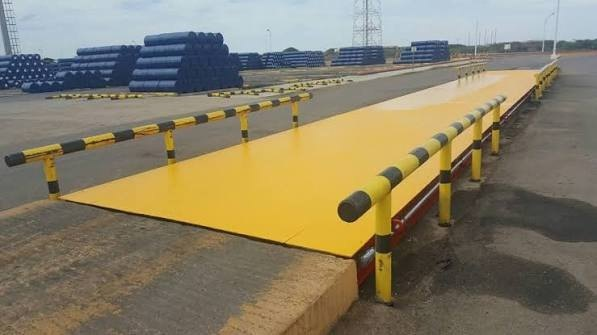
Fabricación de balanzas de perfil bajo
Balanzas de perfil bajo diseñadas para ofrecer un pesaje preciso, resistente y de fácil acceso para el manejo de mercancías en almacenes, plantas industriales, centros de distribución y procesos logísticos.
Su estructura robusta garantiza un excelente rendimiento y una larga vida útil, adaptándose a las necesidades de cada operación. También fabricamos medidas especiales según los requerimientos de cada cliente.
Calidad certificada para un pesaje seguro y eficiente.
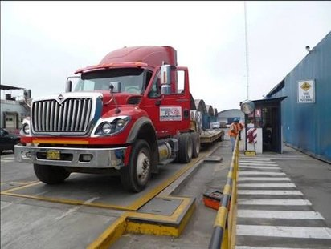
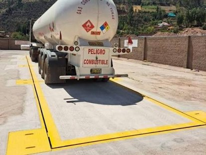
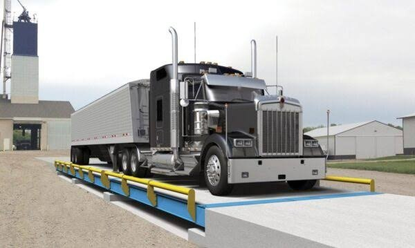
Mantenimiento de balanzas de camiones
Mantenimiento preventivo y correctivo para balanzas de camiones, asegurando su correcto funcionamiento, precisión y prolongando su vida útil. Trabajamos con equipos de todas las marcas y modelos, con soluciones rápidas y adaptadas a cada cliente.
- Inspecciones técnicas
- Ajustes mecánicos y electrónicos
- Limpieza especializada
- Cambio de componentes
- Revisión de celdas de carga
- Revisión de indicadores
- Revisión de sistemas eléctricos
- Menos tiempo de inactividad
Soluciones inteligentes para un pesaje confiable.
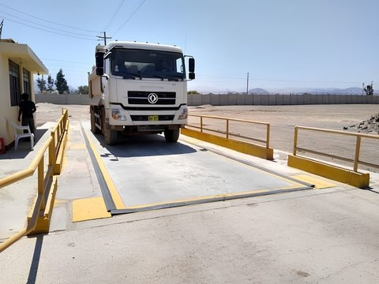
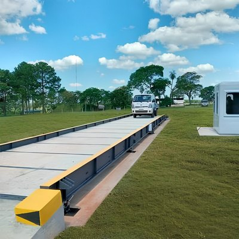
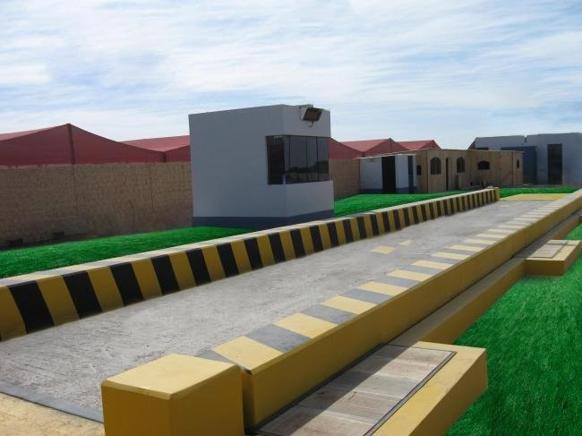
Calibración de balanzas
Calibramos balanzas para garantizar mediciones precisas, confiables y acordes con los estándares de calidad. Nuestro personal especializado realiza ajustes, verificaciones y pruebas utilizando equipos certificados.
Emitimos informes técnicos que respaldan la confiabilidad de cada proceso de calibración y contribuyen al cumplimiento de los requisitos de calidad de nuestros clientes.
Cada kilogramo cuenta cuando la precisión marca la diferencia.
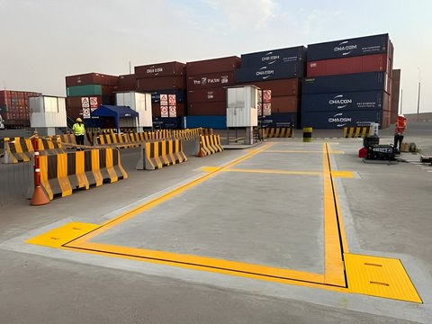
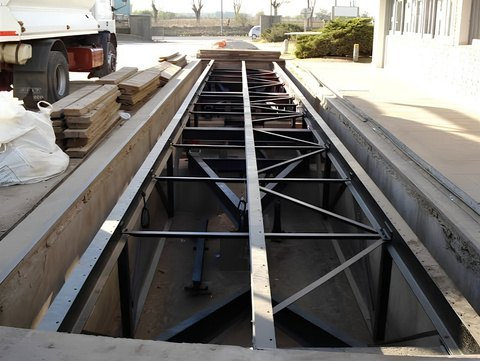
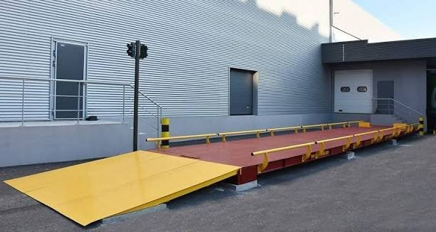
Mantenimiento y calibración de pesas patrón
Mantenemos y calibramos pesas patrón para garantizar su exactitud, confiabilidad y correcto desempeño en los procesos de verificación de balanzas.
- Inspección
- Limpieza especializada
- Ajuste
- Calibración
- Trazabilidad de las mediciones
- Cumplimiento de estándares de calidad
Tecnología, precisión y compromiso en cada proyecto.
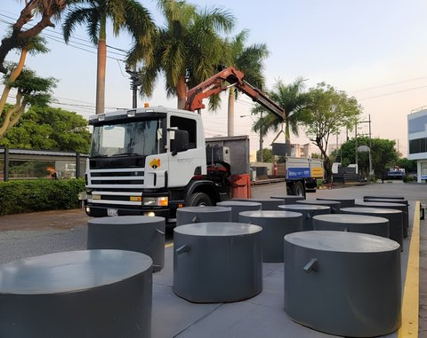
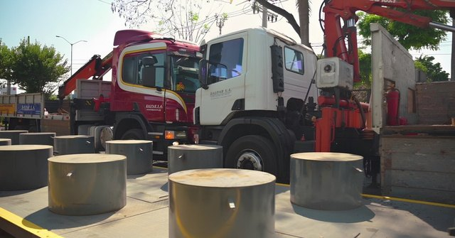
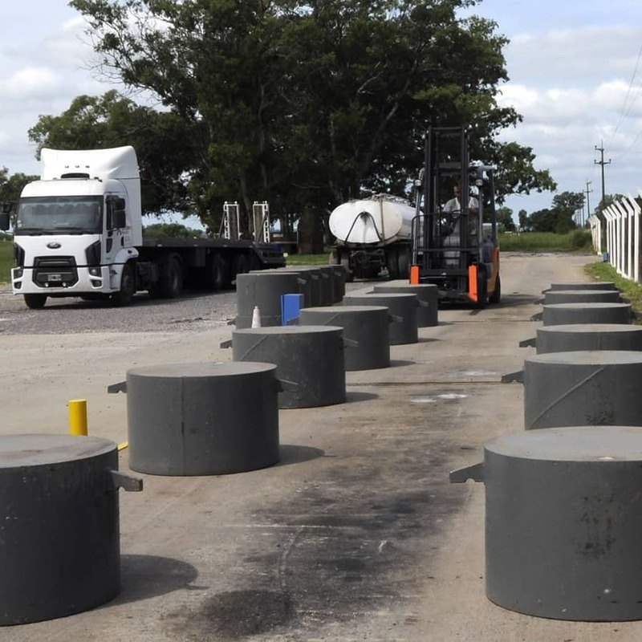
Desarrollo de sistemas de pesaje
Desarrollamos sistemas de pesaje personalizados que integran tecnología, automatización y control para optimizar los procesos de cada empresa, adaptados a los requerimientos de cada cliente.
- Indicadores digitales
- Celdas de carga
- Software de gestión
- Integración con sistemas industriales
Impulsamos su productividad con tecnología de pesaje de alto nivel.
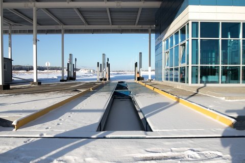
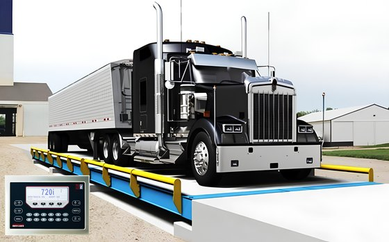
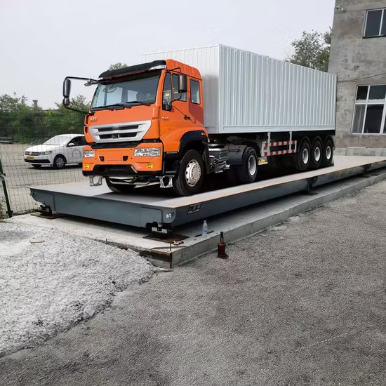
¿Qué balanza necesita su operación?
Indíquenos el tipo de vehículo o carga y la medida que busca. Le ayudamos a elegir entre modelos estándar o una medida especial.